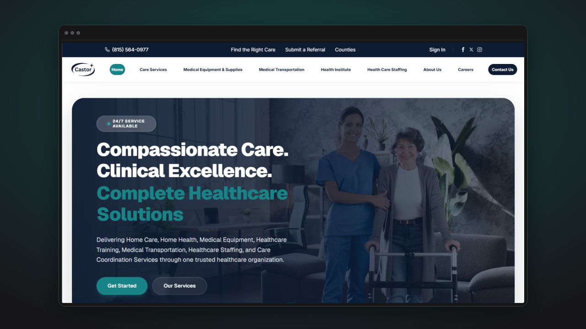
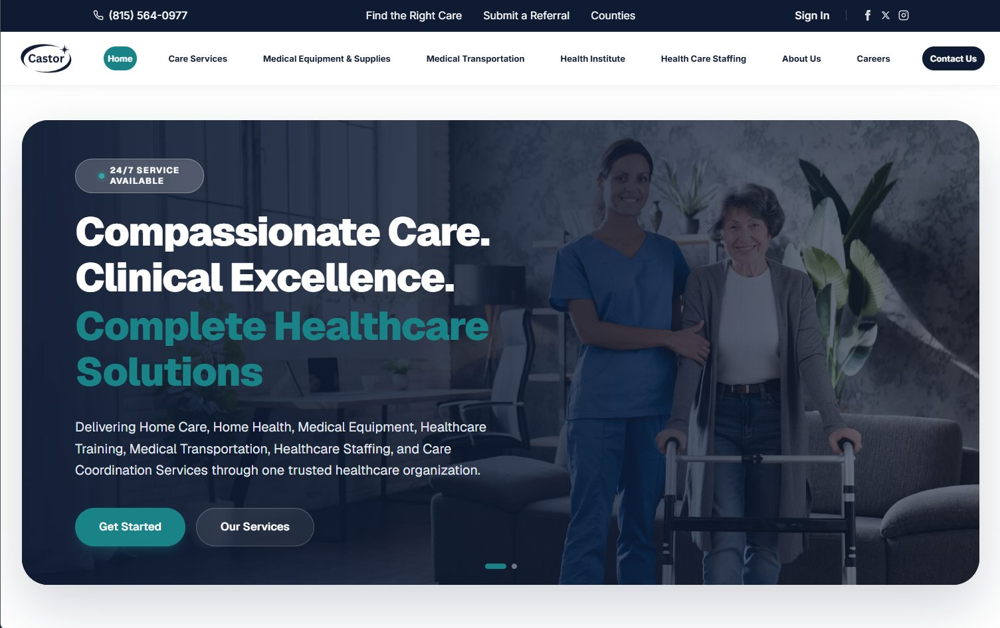
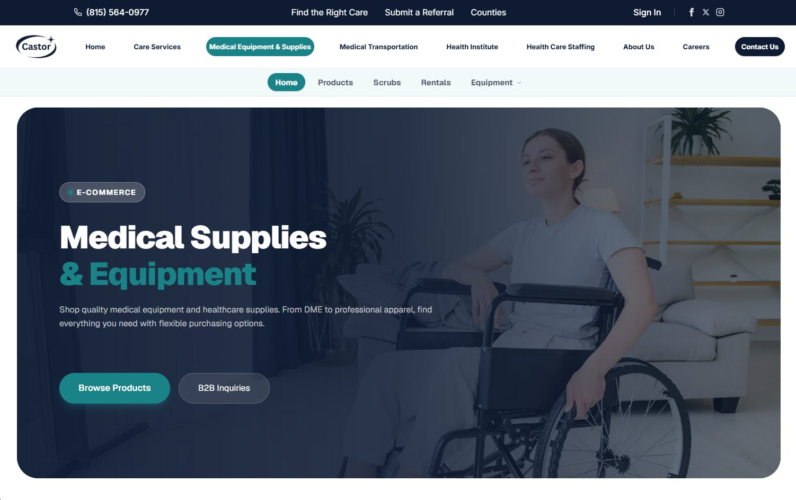
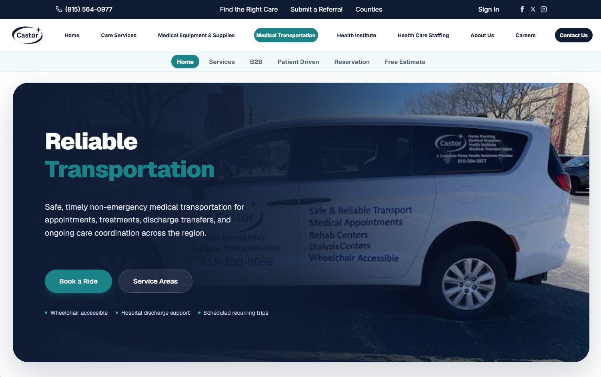
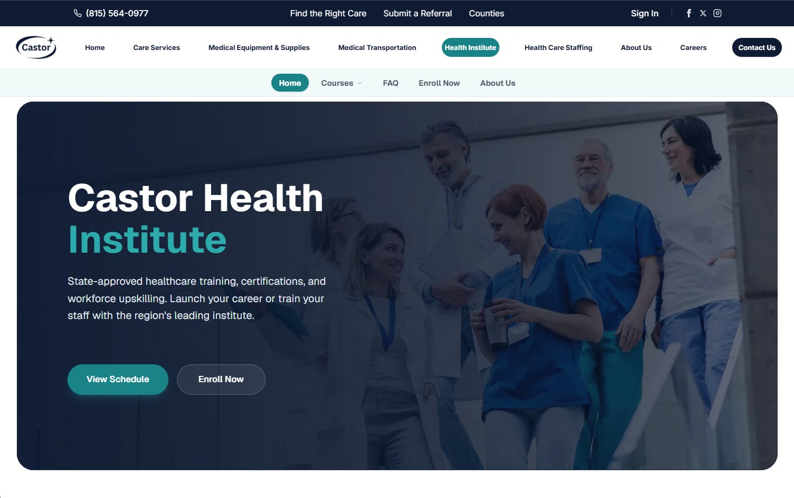
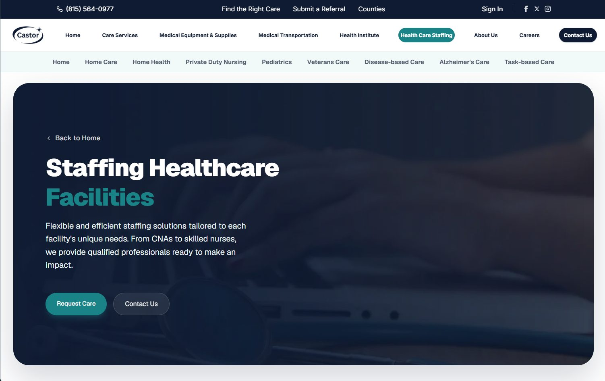

Need-first entry
Rather than presenting a long list of services up front, the experience opens with a guided entry point based on intent — so people reach the right service without needing to understand Castor’s internal structure.
Designing a clearer healthcare experience that helps people find the right service based on their needs, rather than navigating complex healthcare departments.

What kind of healthcare support do I need?
Castor Health brings together multiple healthcare services — home nursing, healthcare education, medical products and medical transportation. The challenge was creating a single digital experience that communicates these services clearly without overwhelming people.
As the UI/UX designer, I worked on the website structure, information architecture, user flows, wireframes and visual interface — focusing on a clear journey from understanding someone’s need to discovering the right service and taking action.
Instead of organising the experience around Castor’s internal departments, I structured the journey around what the person is trying to accomplish: need → service → information → action.
Rather than presenting a long list of services up front, the experience opens with a guided entry point based on intent — so people reach the right service without needing to understand Castor’s internal structure.
Each major service has its own focused experience, so people can understand the offering, the process, the benefits and the next step without unnecessary information.
Important actions — enquiries, service requests, admissions and contacting Castor — have clear visual priority throughout the experience.
The main menu names the six services; inside each one, a light second bar holds that service’s own pages, and a teal pill always shows where you are.
Every service opens with the same rounded photo hero — a two-tone headline, a short promise and two actions — so very different offerings still feel like one organisation.
The supplies shop shows billing codes and stock status on every product, and equipment is organised by need and by location.
The need-first finder, the home page, the hero for each service, and the medical supplies shop.









Want the full walkthrough of this project? Let’s talk